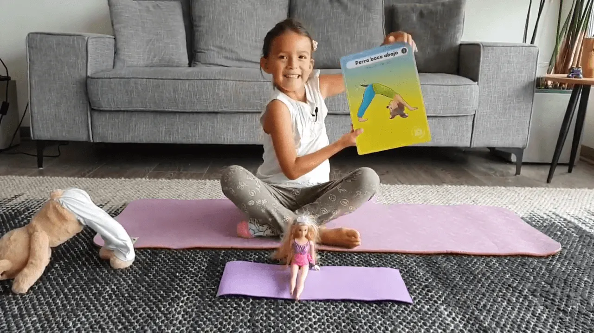

Hoy día Luz les quiere mostrar una nueva postura de yoga para realizar en casa 🏠. Se trata de la postura del Perro Boca Abajo 🐕 (adho mukha svanasana)
☆
La realización de esta postura de manera regular nos trae muchos beneficios, entre los cuales destacamos: * Calma el cerebro y ayuda a aliviar el estrés y la depresión leve.
- Energiza el cuerpo.
- Estira los hombros, los isquiotibiales, los gemelos, empeines, y las manos.
- Fortalece los brazo y las piernas
- Ayuda a prevenir la osteoporosis.
- Mejora la digestión.
- Alivia el dolor de cabeza, insomnio, dolor de espalda y fatiga.
- Sirve de terapia para la hipertensión arterial, asma, pie plano, la ciática.
•
En un par de días Luz hasta quiso crearse un canal y está feliz! 🤩 Gracias por tanto cariño, ella lo hace desde el corazón y nada más lindo que recibir lo mismo de vuelta. A si que gracias por vuestro apoyo 🙏 (le leo cada comentario y mensaje que recibimos 💖)
☆
📢 Si te gustó este video, puedes compartirlo 👌 queremos que más niños y niñas aprendan estas divertidas posturas de yoga en casa 🤸♂️🤸♀️
•
•
#YOMEQUEDOENCASA
